Reverse Engineering 101!
Reverse Engineering 101!


About This Webpage
This is a webpage designed to teach the basics on reverse engineering programs. This assumes you already know basic C programming and how to compile into executables. It is for educational purposes only.

Topics In Order
- printf("Hello World")
- If Statements
- Topic 3
- Cracking A Password
In this section, we’ll explore reversing everyone's first program, printing a simple "Hello World" message in C. This is the foundation of many programming tutorials, and it’s often the first program you’ll write when learning a new language. Below is the basic C code that accomplishes this:
#include <stdio.h>
#include <stdlib.h>
int main(int argc, char **argv) {
char msg[14] = "Hello world!\n";
printf(msg);
system("pause");
return 0;
}
As simple as it is, this small piece of code is the gateway to understanding how programs interact with the system to output data to the user! You can see below what the program will look like once compiled and ran.
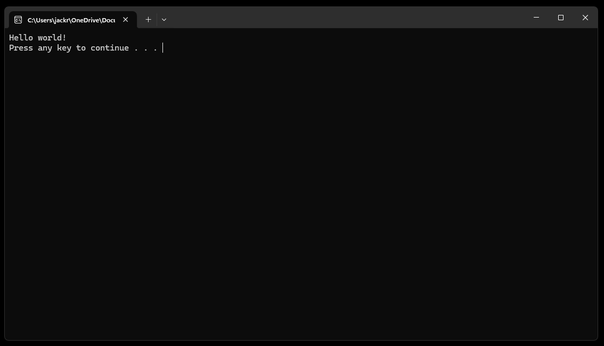In this first screenshot of the program running, we can see it paused at the entry point in a debugger. The program has hit a breakpoint right at the start, before any code executes. This is a crucial moment for understanding how the program begins, as the debugger allows us to inspect the initial state of variables, memory, and the execution flow. This screenshot marks the first step in exploring the program's behavior from the very beginning.
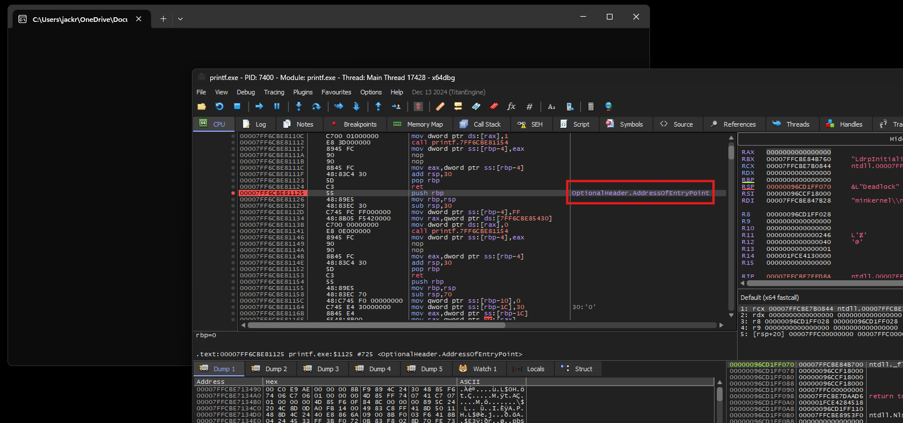Now in this next one we've stepped through the program to a point where the code is now displayed in assembly language. This is the low-level execution of the program after it has passed through the initial setup and initialization stages. Upon launching an executable, the operating system loads the program into memory, sets up the necessary environment, and then creates a thread to begin execution. The entry point of the program is where execution starts, what you've stepped through are the initalization functions setup by the operating system.
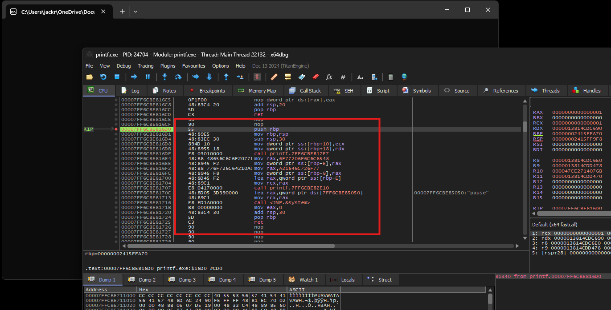You can now see the the program as a whole. You can make out some of the functions in the C code such as printf and system. Go ahead and step all the way down to the instruction in 0x7FFC6CBE81707. The instruction 2 above this one is reading the msg variable "Hello World!\n" from memory. [rbp - E] is the memory address of where that variable is written. You can see below it was loaded into RAX (in the top right) and view what it looks like in memory at the bottom. Bonus: You can add 0xE to the memory address at the bottom to get the hex value in RBP.
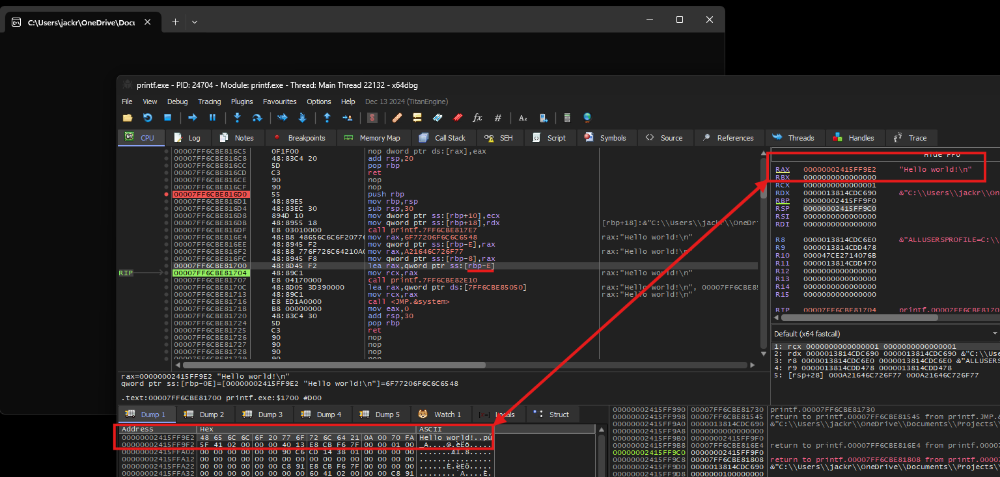So once you've analyzed your C program in the debugger step into the first printf function. This is our program calling printf() you will notice there are now 2 functions inside of it as well. One is acrt_iob_func and sdtio_common_vfprintf. The acrt_iob_function handles I/O streams, so for this program we are printing out to the console so it will handle the ouput stream. This function utilizes the structures stdout, stdin, stderr. The second sdtio_common_vfprintf looks alot like printf, so you might be wondering why there is another printf inside the original one. Well our printf() in the C program calls to a lower level printf function which is what you're viewing there. You can conclude from this image that C's printf function takes care of the stream initializing and runs the printf function from the sdtio.h library.
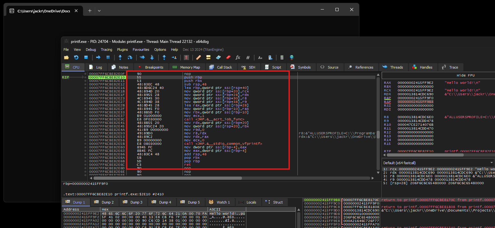Lets step down to the second printf function, you can view on the right hand side the stack pointer is pointing to the stack where the printf function has been pushed. This is in prepration for executing the function.
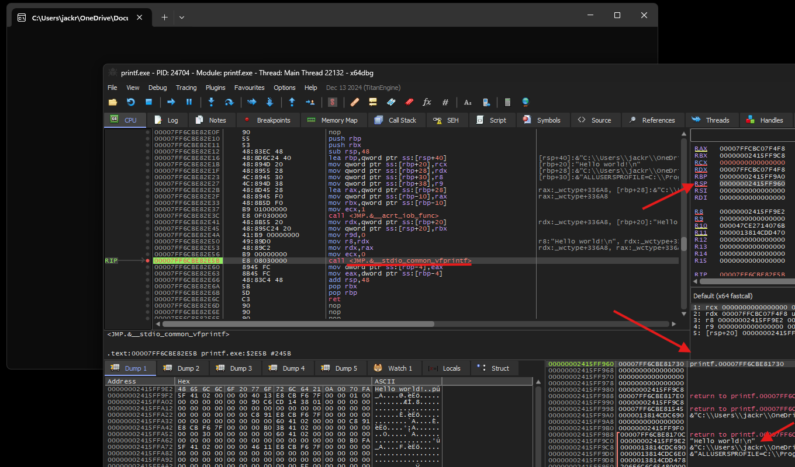Now this jump will take us to the stdio.h library. You can view all the other functions associated with the libraries we've loaded into our program. You can see these have been loaded into memory and this is where they can be jumped from to get to their function code.
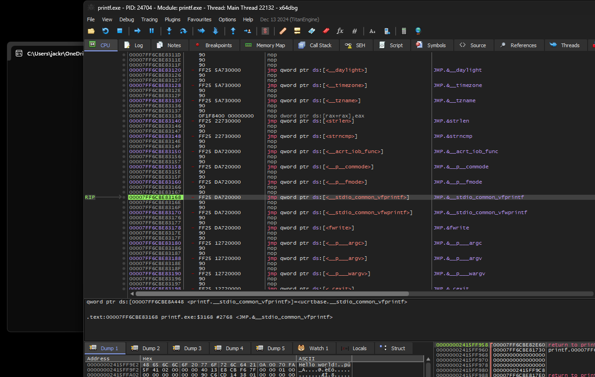And when we step on more time we can now view the assembly for the stdio_commmon_vprintf function. You may notice a lot of new calls with a new libray. Ucrtbase is listed multiple times in this program. Ucrtbase is Universal C Runtime which is part of Microsoft's implementation of the C Runtime Library. This is specific to windows and is to ensure that windows applications across the board had a standard runtime library to be compatible across various Mircosoft tools. It has all the same functionalities of the original C runtime library as well, it does all the similar things like malloc, free, caclloc, printf, scanf, puts, strcpy, strlen, strcat etc.
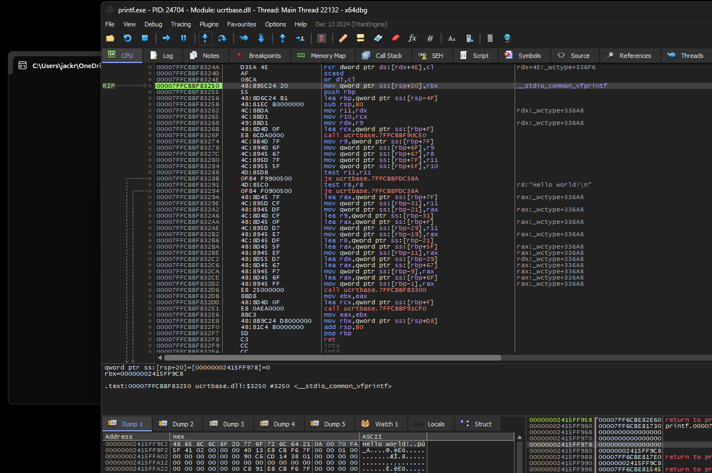So now follow along as to which ucrtbase's I step into, this is the first one we'll step into.

And now step into this one I have highlighted
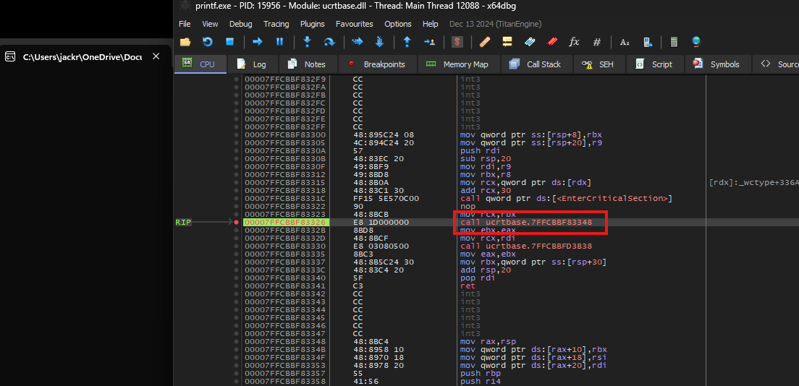You can now see we have this really long function with some jumps.
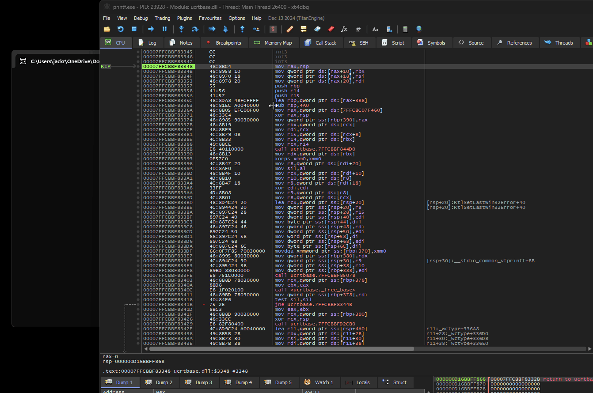We're going to step down until the 4th to last call to ucrt, and then step into that function
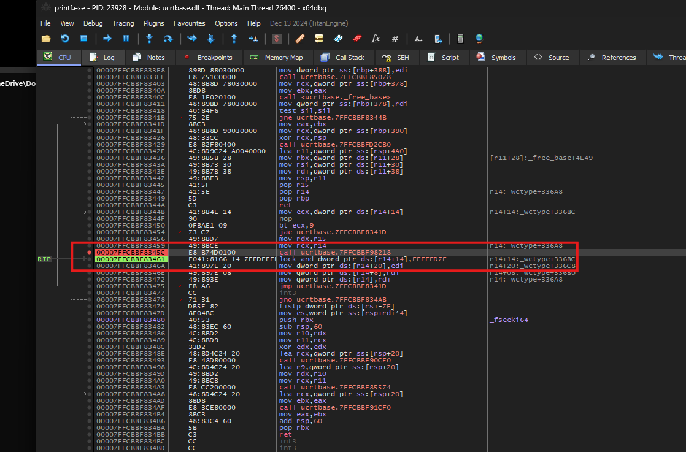Now step down and into the last call to ucrt function
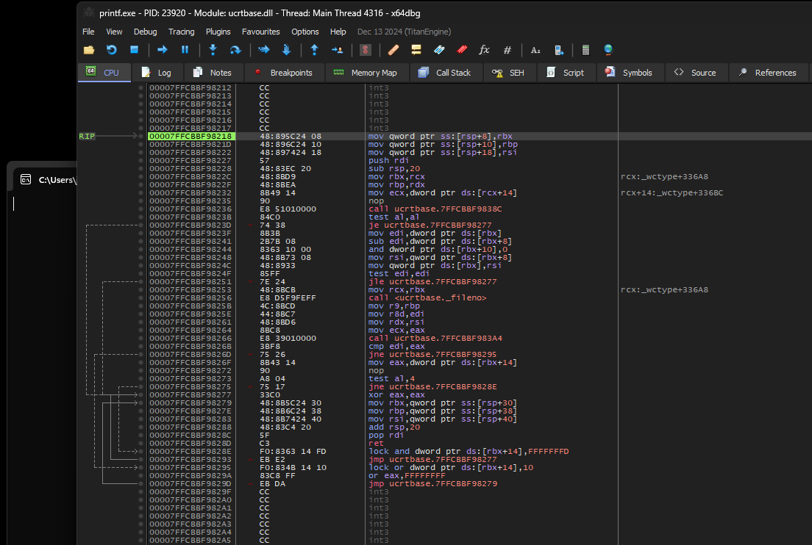Now this function is interesting because it has a bunch of jumps and its comparing al to 0xA. Al is the last two bits of the RAX register, and 0xA is the hexidecimal for the \n character. Go ahead and set a breakpoint on the cmp rbx,rsi above that compare.
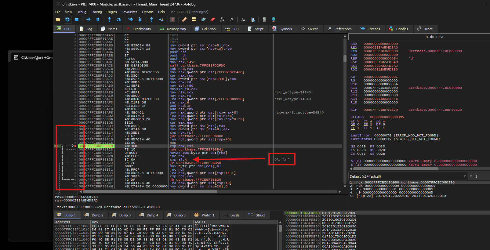Go ahead and starting click run, you will see it is consistently looping, if you look in the top right, RAX is changing just those last two bits. This is because it is reading our msg variable and checking for a new line. It goes character by character reading and checking it hasn't reached a new line and if it does it knows to move forward with the program. You can see this because of the je instruction right after the compare. That is if the cmp al, 0xA is successful them jmp, je = jump if equals.
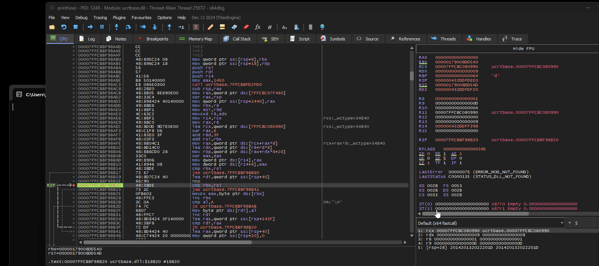Here you can see the jump it makes once it reaches the end of our character array. This will finish reading the array from memory and now it has been prepped to be written. You can see right after this segment of code, the WriteFile function is called. Lets step down and into that function.
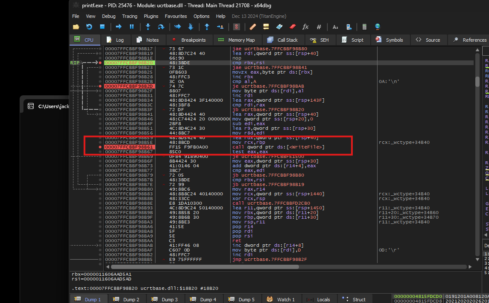A little background on the WriteFile function, it is apart of the Windows API and is used to write data to a file or in our case an I/O device. Remember the original printf function and how it intialized the I/O stream witht eh arct_iob_function? This is where this will come in to play since it was intialized. Inside that function of course is the lower level kernel32.dll's function NtWriteFile.
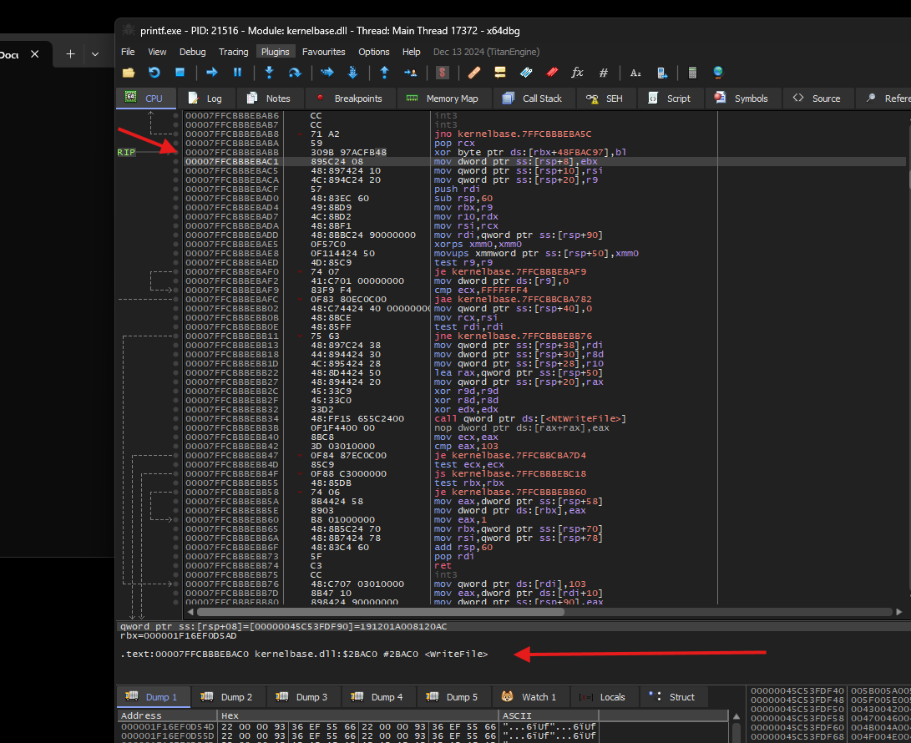For even more background WriteFile is apart of the Windows API, and NtWriteFile is apart of the NT API (Native). WriteFile is a higher level version of the function in C to perform writing to files or I/O devices. NtWriteFile is lower level and closer to the kernel. This has a more direct interface to the kernel and typically isn't used directly by applications. While its direct and more efficient it is not as user friendly and lacks some things such as error handling. This is why it is wrapped in the WriteFile function.
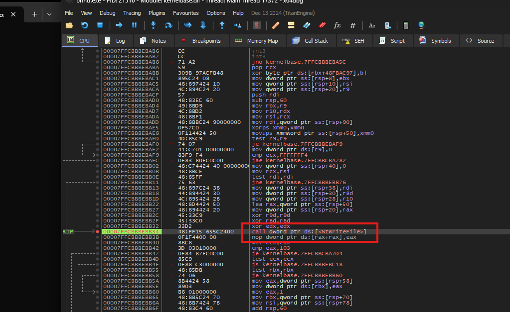And if we step into the NtWriteFile function here we will see the direct interaction and SYSCALL to write our character array to our I/O Stream that is to the console.
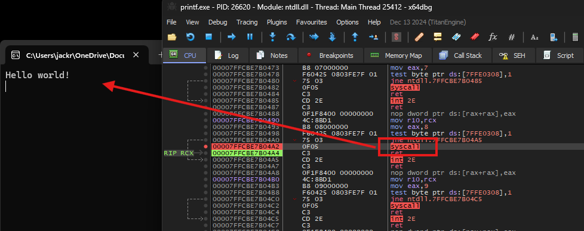Now go ahead and start stepping over, you will hit a bunch of returns. It will eventually pull you out all the way back to our original program in assembly. You can see how many layers of abstraction there are between different functions and windows dlls. Once back at the original code, you can see on the right hand side "pause" has been loaded into the address shown. Here it is being prepped to be executed for the system function call.
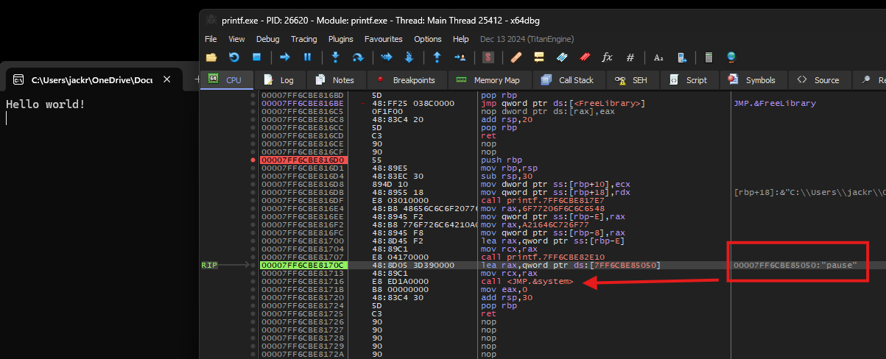As you step through the rest of the code you will now see the prompt waiting for user input on the system function. As a little bonus beneath, you can view our c program in assembly and in machine code both hex and binary.
Assembly
push rbp
mov rbp,rsp
sub rsp,30
mov dword ptr ss:[rbp+10],ecx
mov qword ptr ss:[rbp+18],rdx
call printf.0x(MemAddr)
mov rax,0x(MemAddr)
mov qword ptr ss:[rbp-E],rax
lea rax,qword ptr ss:[rbp-E]
mov rcv,rax
call printf.0x(MemAddr)
lea rax,qword ptr ds:[MemAddr]
mov rcv,rax
call <JMP.&system>
mov eax,0
add rsp,30
pop rbp
ret
Machine Code - Hexadecimal
48 89 E5
48 83 EC 30
89 4D 10
48 89 55 18
E8 03 01 00 00
48 B8 48 65 6C 6C 6F 20 77 6F
48 89 45 F2
48 B8 77 6F 72 6C 64 21 00 00
48 89 45 F8
48 8D 45 F2
48 89 C1
E8 04 17 00 00
48 8D 05 3D 39 00 00
48 89 C1
E8 ED 1A 00 00
B8 00 00 00 00
48 83 C4 30
5D
C3
Machine Code - Binary
01010101010010001000100111100101010010001000001111101100001100001000100101001101000100000100
10001000100101010101000110001110100000000011000000010000000000000000010010001011100001001
00001100101011011000110110001101111001000000111011101101111010010001000100101000101111100100100
100010111000011101110110111101110010011011000110010000100001000000000000000001001000100010010
100010111111000010010001000110101000101111100100100100010001001110000011110100000000100000101
110000000000000000010010001000110100000101001111010011100100000000000000000100100010001
001110000011110100011101101000110100000000000000000101110000000000000000000000000000000000
0010010001000001111000100001100000101110111000011
It's not ready come back later.
Nope still not ready either, please come back at another time.
Really you thought this one was going to be ready?